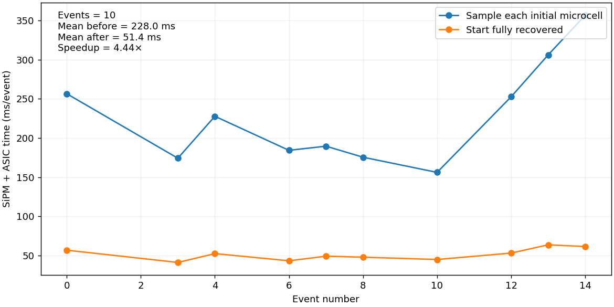

ITACA indexSiPM initial recovery
- Start fully recovered: R = S = M.
- Dark activity, PDE sampling, occupancy, recovery, 128 substeps and ASIC response remain enabled.
- Ten identical input photon events for both settings; three timed repetitions per event, after warm-up. Each plotted point is the median of those repetitions.
- Times cover all SiPMs and buckets in the event, including channels with zero photon input.

| Sampled initial state | Fully recovered |
|---|
| Mean SiPM + ASIC time (s/event) | 0.2280 | 0.0514 |
| Mean allocations (MiB/event) | 181.78 | 47.58 |
Removed initial microcell draws: 17.16 million per event on this sample.
Historical cards retain stationary-dark initialization. New framed runs use the fully recovered card.